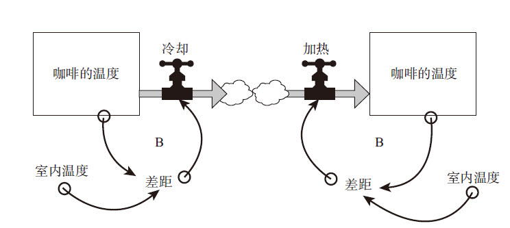
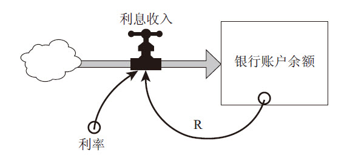

波尔·安德森
美国科幻作家
无论一个问题多么复杂，如果能以正确的方法去看待，它都会变得简单起来。
系统并不仅仅是一些事物的简单集合，而是一个由一组相互连接的要素构成的、能够实现某个目标的整体。从这一定义可见，任何一个系统都包括三种构成要件：要素、连接、功能或目标。
例如，你的消化系统包括牙齿、酶、胃、肠等要素，它们通过身体血液的流动和一系列化学反应产生相互的连接；消化系统的功能是将食物转化为人体所需的基本营养成分，并将这些营养成分输送到血流中（另一个系统），同时通过新陈代谢，排出各种废物。
再如，一支足球队是一个系统，它的要素包括球员、教练、场地和足球等；它们之间通过游戏规则、教练指导、球员技能、球员之间的交流以及物理法则等产生连接；而球队的目标是赢球、娱乐、锻炼或赚钱等。
同样，一所学校、一座城市、一家工厂、一个公司以及国家经济等，都是系统。动物是一个系统，树也是一个系统，而森林则是一个更大的系统，包含了很多树木和动物等这些子系统。地球是一个系统，太阳系、银河系都是系统，包含了地球和其他很多子系统。
因此，一个系统中可能包含很多子系统，而它也可以嵌入到其他更大的系统之中，成为那个更大的系统中的一个子系统。
那么，有什么事物不是一个系统吗？是的，没有任何内在连接或功能的随机组合体就不是一个系统。举例来说，随机散落在路上的一堆沙子，就其本身来说就不是一个系统，因为它们之间没有什么稳定的内在连接，也没有特定的功能。你可以任意添加或取走一些沙子，而它们仍旧只是路上的一堆沙子。
但是，对于系统来说，如果你更换了其中的要素，系统就被改变了。例如，如果你新引进或开除了某一个球员，或者将你消化系统中的某些器官进行了一些调整，那么它们很快就不是原来的那个系统了。当一个生物死去，使其成为一个有机系统的多种连接不再产生作用时，它就丧失了作为一个系统的存在状态，尽管它仍是一个更大的食物链系统中的组成部分。类似地，在一座老城中，人们彼此熟识、经常交流，就会形成一个社会系统；而一个充满了各色陌生人等的新街区，就不是一个社会系统，直到这些人之间产生了一些新的连接关系，一个系统才会形成。
系统之思
对于一个系统来说，整体大于部分之和。任何一个系统都包括三种构成要件：要素、连接、功能或目标。它具有适应性、动态性、目的性，并可以自组织、自我保护与演进。
可见，系统既有外在的整体性，也有一套内在的机制来保持其整体性。系统会产生各种变化，对各种事件做出反应，对各种错误或不足进行修补、改善和调整，以实现其目标，并生机勃勃地生存下去，尽管很多系统本身可能是由各种无生命的要素构成的。系统可以自组织，并且常能通过局部的瓦解来进行自我修复；它们具有很强的适应性，很多系统还可以自我进化、演变，生成另外一些全新的系统。
苏菲教育故事
因为“一加一等于二”，所以你自认为只要知道“一”，就能知道“二”，但是你忘了，你还必须理解两个“一”之间的关系。
构成系统的要素是比较容易发现的，因为它们多数是可见、有形的事物。例如，树是由树根、树干、树枝、树叶这些要素构成的。如果更仔细地观察，你还会发现其中有一些更小、更具体的单元，如流动着液体的叶脉以及叶绿体等。一所大学也是一个系统，它由建筑物、学生、教师、管理人员、图书馆、图书、计算机等构成——诸如此类，不胜枚举。
当然，要素并不一定是有形的事物，一些无形的事物也可以是系统的要素。比如在一所大学中，学校的声誉和学术能力就是该系统中至关重要的两大要素。事实上，当你想罗列出一个系统中的所有要素时，你会发现那几乎是一项不可能完成的任务。你可以把一些大的要素分解为若干子要素，并进而细分为子子要素，但很快，你就会迷失在系统中，正如人们所说的“见树不见林”。
为避免这种情况，你应该从细究要素转向探寻系统内在的连接关系，即研究那些把要素整合在一起的关系。
系统多棱镜
请思考以下问题：
如何才能知道你观察的是一个系统，而不是一堆材料的集合？
1）你能够识别出各个部分吗？
2）这些部分相互之间有联系吗？
3）这些部分单独作用时产生的影响和它们整合在一起时产生的影响有所不同吗？
4）这些影响和长期的行为在各种环境中都是固定不变的吗？
在树木系统中，内在的连接关系是那些影响着树木新陈代谢过程的物质流动和化学反应，也就是让系统中某一部分对另外一些部分的状况做出反应的各种信号。
例如，晴天时，当树叶散失了水分，负责输送水分的叶脉中的压力就会减小，从而从树根那里汲取更多的水分；相反，如果树根察觉到土壤变得干燥、水分减少，叶脉中压力减小的信号就会让树叶关闭毛孔，以避免流失更多的水分。
在温带，随着白昼的逐渐缩短，落叶树木会释放出一些化学信号，使树叶中的养分向树干和树根传输，从而导致叶茎枯萎、树叶脱落。甚至当某个部分遭到害虫攻击时，树木也能发出一些信号，让自身产生驱虫的化学反应或形成更加坚固的细胞壁。
没有人了解是什么让树木做出这样的反应，但这也不足为奇，因为研究系统的要素毕竟要比研究其内在的关系简单得多。
在一个大学系统中，内在连接包括入学标准、学位要求、考试和分数、预算和现金流、人们的闲谈等。当然，最重要的是知识的交流，这或许才是整个系统的根本目的。
系统之思
系统中的很多连接是通过信息流进行运作的。信息使系统整合在一起，并对系统的运作产生重要影响。
系统中的某些连接是实实在在的物质流，例如树干中的水分，或者学生在大学中的改变；还有很多连接是信息流，也就是系统中影响决策和行动的各种信号。这类连接通常很难被发现，但只要你用心，就会看到它们。例如，学生们可能会通过一些非正式的信息渠道，去了解每门课获得高分的概率，从而决定选修哪些课；消费者可能会参考其收入、储蓄、贷款额度、家中的存货量、商品价格和数量等信息，来做出是否购买的决策；政府在出台切合实际的治污法规之前，也需参考水污染的种类和数量等信息（当然，了解问题存在的相关信息是必要的，但还不足以采取行动——我们还需要了解资源、动机和结果等信息）。
如果说基于信息的连接都很难被发现的话，那么与系统的功能或目标有关的连接就更难被察觉了。只有通过分析系统的运作，我们才有可能明确地表述出系统的功能或目标。要想推断出系统的目标，最好的方法就是仔细地观察一段时间，看看系统有哪些行为。
如果一只青蛙向右转捉住了一只苍蝇，然后向左转又捉住了另一只苍蝇，接着又向后转捉住了第三只苍蝇，那么我们就可以判断出青蛙的目的并非是向左、向右或向后转身，而是为了捕捉苍蝇。如果一个政府宣称要保护环境，却只为此拨付了很少量的资金，投入很少的精力，那么我们就可以判断出政府的实际目的并非保护环境。因此，必须通过实际行为来推断系统的目标，而不能只看表面的言辞或其标榜的目标。
系统之思
总的来说，“功能”一词常用于非人类系统，而“目标”一词则用于人类系统。但它们之间的区分并不是绝对的，因为很多系统兼具人类和非人类要素。
温控系统的功能是让建筑物内的温度保持在一个设定的水平；植物的功能是结出果实、繁育更多的植物；国家经济的目标是保持增长。几乎每一个系统都有一个重要的目标，那就是确保自我永存。
系统的目标不一定符合人们的初衷，或系统中某个个体的意愿。在很多情况下，系统中各个要素的目标是不一致的，并都会或多或少地对系统整体行为产生影响。最后，系统所呈现出来的结果很有可能事与愿违，谁都不满意，谁都不愿意看到。就像我们现在的社会，吸毒和犯罪日益猖獗，但是没有人主观上想要这样。以下是我们所处的社会系统中一些角色的意愿，而这些意愿汇总起来，就有可能形成上述景象。
●有些人想要尽快摆脱心灵上的伤痛；
●农民、商人和银行家都想要赚钱；
●贩毒人员对法律的约束无所畏惧，但是又害怕警察的打击；
●政府颁布禁毒法令，并借助警力维护法律，打击毒品贩卖；
●富人们居住在离穷人很近的地方；
●吸毒者更关心如何保护自己，而非戒除毒瘾。
在社会系统中，上述这些要素各自的目标看起来都是正当的，但它们组合成为一个系统，相互影响，就造成了吸毒和犯罪日益蔓延并很难被根除的恶果。由于系统中嵌套着系统，所以目标中还会有其他目标。
例如，如果说一所大学的目标是创造和保护知识，并将知识代代相传的话，在其中，学生们的目标就可能是取得好的分数，教授们的目标或许是保住饭碗，而管理人员的目标是预算平衡。这些个体的目标有可能与总目标冲突：学生们为了获得好的分数可能在考试中作弊，教授们可能会忽视教学而一心只顾着发表论文，管理者可能会解雇优秀的教授以实现预算平衡。
一个成功的系统，应该能够实现个体目标和系统总目标的一致性。我们会在后面讨论系统的层级时，再来深入探讨这一问题。
如果系统中的个体是一个接一个地发生变化，那么，我们就能够识别出系统中有哪些要素、它们之间的内在联系、系统的目标以及各种要素的相对重要性。但事实并非如此。虽然系统中的某些要素是很重要的，但一般说来，改变要素对系统的影响是最小的。即使更换了一支足球队中的所有队员，它仍是一支球队（当然，有可能表现得更好或者更糟）；一棵树的细胞、树叶年年都在不断地变化，但它仍是同一棵树；你的身体每隔几周就会更换掉大部分细胞，但那仍是你的身体；大学中的学生每年都在不断流动，教授和管理人员也会缓慢变化，但它仍是一所大学；即使更换了所有成员，通用汽车公司和美国国会也依然如故。总之，只要不触动系统的内在连接和总目标，即使替换掉所有的要素，系统也会保持不变，或者只是发生缓慢的变化。
系统之思
系统中最不明显的部分是它的功能或目标，而这常常是系统行为最关键的决定因素。
相反，如果内在连接改变了，系统就会发生巨大的变化。拿球队来说，如果球员之间的关系更亲密了、配合程度提高了，即使还是那些球员，整个球队也可能会变得耳目一新；如果改变足球或篮球比赛的规则，我们肯定会看到一种全新的比赛；如果我们改变了树木中的内在连接（例如，不再让它吸入二氧化碳、呼出氧气，而是相反），那它就不再是树了（或许会变成动物）；如果在一所大学中，不是让教授给学生来打分，而是让学生给教授打分，或者在争论时不是以理服人而是以暴取胜，那么我们就不能称其为大学了。这或许是个有趣的组织，但绝不是大学。总之，改变系统中的内在连接，会让系统发生显著的变化。
同样，功能或目标的改变也会对系统产生重大影响。如果仍旧保留那些球员和规则，但改变比赛的目标——看谁输而不是谁赢；如果树木的生存目标不是为了繁衍后代，而是为了获取土壤中所有的营养成分，以无限成长；如果大学的目标不仅是传播知识，还要实现赚钱、教导民众、赢取球赛等目的，情况会怎么样？显然，目标的变化会极大地改变一个系统，即使其中的要素和内在连接都保持不变。
有人可能会问：要素、内在连接和目标对系统来说，哪个是最重要的呢？以系统的观点来看，这个问题本身就是个伪命题。
系统提示
系统三要件的关系
对一个系统来说，要素、内在连接和目标，所有这些都是必不可少的，它们之间相互联系，各司其职。一般来说，系统中最不明显的部分，即功能或目标，才是系统行为最关键的决定因素；内在连接也是至关重要的，因为改变了要素之间的连接，通常会改变系统的行为；尽管要素是我们最容易注意到的系统部分，但它对于定义系统的特点通常是最不重要的——除非是某个要素的改变也能导致连接或目标的改变。
例如，更换国家最高领导人。像前苏联领导人由勃列日涅夫换成戈尔巴乔夫，或者是美国总统由卡特换成里根，虽然这个国家的土地、工厂和亿万民众仍然保持不变，但仍有可能把整个国家引向全新的方向，因为新的领导人可以为土地、工厂和民众制定新的规则，或让国家系统的目标发生改变。当然，也有可能什么都不会发生，因为土地、工厂和民众是国家系统中长期存在的物质要素，变化相对缓慢，任何一个领导人对整个国家的改造程度都是有限的。
西班牙生态学家 罗蒙·马格列夫
大自然中蕴藏的信息使我们能重现一部分历史。河流的改道、地壳的运动……所有这些世界变迁的真实痕迹，都像是遗传系统中的信息存储器——随着存储信息的不断增加，系统的结构也会日益复杂。
“存量”是所有系统的基础。所谓存量，是指在任何时刻都能观察、感知、计数和测量的系统要素。如其名称所示，在系统中，存量是储存量、数量或物料、信息在一段时间内的积累量。它有可能是浴缸中的水、人口数量、书店中的书、树木的体积、银行里的钱，等等。但是，存量不一定非得是物质的，你的自信、在朋友圈中的良好口碑，或者对世界的美好希冀等，都可以是存量。
系统之思
存量是对系统中变化量的一种历史记录。
存量会随着时间的变化而不断改变，使其发生变化的就是“流量”。所谓流量，是一段时间内改变的状况。例如浴缸中注入或流出的水量、出生或死亡的人数、买入或卖出的数量、成长或衰退、存入或取出、成功或失败等（如图1—1所示）。
图1—1 存量—流量图
系统提示
如何阅读存量—流量图
在本书中，存量用方框来表示，流量则用流入或流出存量的、带箭头的水管来表示。在每个流量上标有一个T型图案，代表“水龙头”，表示流量可以被调高或调低、打开或关闭；在流量的前端或后端，有时会画一个“云朵”图案，表示该流量的资源和消耗，也就是该流量从哪里来、到哪里去。虽然我们可以进一步明确这些来源和去处，但这样会把我们对当前系统的分析变得过于庞杂。因此，出于简化当前讨论的需要，我们可以把这些因素用“云”来概略地表示。
例如，地下的矿藏是一个存量，随着该矿藏被人们发现和开采，会产生一个矿藏开采的流量。由于矿藏的形成（流入量）可能是数百万年前各种复杂地质变化的综合作用，很难全面表述，因此这里用一个简单的存量-流量图进行描述（如图1—2所示，图中没有画出流入量）。
图1—2 矿藏储量慢慢被开采、消耗
大坝后面水库中的水也是一个存量，流入量有雨水和江河的来水，流出量包括水的蒸发和堤坝放水（如图1—3所示）。
图1—3 水库中的存量和各种流入、流出量
一片森林中所有树木的蓄积量也是一个存量，流入量是树木的生长，流出量包括树木的自然死亡和伐木工的砍伐。被砍伐的木材累积起来，会形成另外一个存量，即伐木工厂里木材的存货量；而当木材出售给客户时，就会产生一个流出量，减少库存（如图1—4所示）。
图1—4 一片森林中的存量和各种流量
如果你能够理解各种存量和流量的动态特性，也就是它们随时间流逝而产生的各种行为变化，你就能更好地理解复杂系统的行为。现在，让我们以大家都多少有些体验的“浴缸”为例，来理解存量和流量的动态特性（如图1—5所示）。
图1—5 浴缸系统的结构——一个存量、一个流入量和一个流出量
想象一下，当一个浴缸盛满了水，其排水口被塞住，自来水管也关着时，这是一个毫无变化、没有活力、乏味的系统。现在，如果我们拔掉塞子，水就会流出去，浴缸中的水位会不断下降，直至浴缸中的水完全流尽（如图1—6所示）。
图1—6 当塞子被拔掉时，浴缸中的水位变化情况
系统提示
关于行为模式图的阅读提示
系统思考者经常会使用图表来辅助理解系统的动态变化，了解系统行为随时间而变化的趋势或模式，而不只是关注个别的事件。借助行为模式图，我们可以判断系统是否正在趋向某个目标或极限点变化，也可以了解其变化的速度。
图表中的变量可以是存量，也可以是流量。在阅读这类图表时，要重点关注其变化模式，即表述变量数值变化的线条的形状和方向，相对来说具体的数字并不重要。
横轴是时间轴，有助于你探究问题的来龙去脉，促使你关注所研究问题的时间范围。
现在，让我们再想一想那个盛满水的浴缸。我们再次拔出塞子，但这次，当浴缸还剩下一半水量时，我们拧开水龙头，让水流进浴缸，并使流入浴缸的水与流出的水保持同等速率。这时会发生什么呢？很简单，浴缸里的水位将保持不变，即处于一种动态平衡的状态。（如图1—7所示）
图1—7 水持续流入、流出5分钟的情况，以及浴缸中水量变化的结果
假如我们把水龙头开得再大一些，让水流入的速度稍大于流出的速度，那么浴缸中的水位将会缓慢上升。接着，我们再把水龙头调小，使水的流入和流出速度保持一致，那么浴缸中的水位又会停止上升。相反，拧小水龙头，水位则会缓慢下降。
上述的浴缸就是一个非常简单的系统，只有一个存量、一个流入量和一个流出量。由于在我们考察的时间范围内（数分钟），浴缸中水的蒸发量微乎其微，所以我们未将这部分流出量计算在内。所有的模型，无论是心智模型还是数学模型，都是对现实世界的简化。借助这些模型，我们可以了解浴缸系统所有可能的动态变化。由此，你可以推断出几项重要的原则，它们同样适用于其他更为复杂的动态系统：
●只要所有流入量的总和超过了流出量的总和，存量的水平就会上升。
●只要所有流出量的总和超过了流入量的总和，存量的水平就会下降。
●如果所有流出量的总和与流入量的总和相等，存量的水平将保持不变；事实上，无论在任何情况下，当系统的流入量和流出量相同时，系统就处于动态平衡的状态。
人类的大脑似乎更加容易关注存量，而不是流量。更进一步地说，当我们关注流量时，我们更容易倾向于关注流入量，而不是流出量。因此，我们有时候会忽视这样一个事实：如果要灌满浴缸，不能只是提高流入速率，还需要降低流出速率。每个人都能认识到，要想维系当今这个离不开石油的经济体系，我们可以加大勘探力度，不断发现新油田；但是，并不是每个人都可以很好地认识到，同样的结果也可以通过减少石油的消耗来实现。如果能在能源使用效率方面实现更大的突破，这和发现一个新油田、增加可用石油储量的效果是一样的。当然，从中获利的人是不同的。
系统之思
要想使存量增加，既可以通过提高流入速率来实现，也可以通过降低流出速率来实现。请注意，要灌满一个浴缸，不是只有一种方式。
类似地，可以通过招聘更多的人来扩大公司规模，也可以减小职工的离职率或辞退速度；这两种策略的成本可能差异很大。可以通过投资、建立更多的工厂和机器设备来增加一个国家的财富，也可以减少工厂和机器设备的磨损、故障或停工；一般来说，后者可能成本更低。
你可以突然调整浴缸的流量——完全打开排水管或关上水龙头阀门，但要想快速地改变存量（水位）就要困难得多。即使你把排水管完全打开，浴缸里的水也不可能一下子排空；同样，即使你把水龙头开到最大，浴缸也不可能马上被灌满。存量的变化需要时间，因为改变它的流量运作需要时间。这是一个关键点，是理解各种系统行为为什么如此运作的一把钥匙。譬如，因为存量的变化一般比较缓慢，它们可能表现为延迟、欠货、缓存、压舱物以及系统中动量的源泉等。存量，尤其是比较大的存量，在应对变化时，只能通过逐步的增加或释放来实现，即使对于突然的变化也是如此。
人们经常低估存量的内在动量。
例如，人口的增长或停止增长、森林中木材的蓄积、水库蓄水、矿藏的耗尽等，都需要花很长的时间。国家的富足，大量工厂和基础设施（如高速公路、发电厂等）的建立，都不是一朝一夕之功，即使你有大把大把的钞票也不可能一夜之间建成。一旦一个依赖石油的经济体被建立起来了，大量的熔炉、汽车发动机每天运作就都需要燃烧石油，即使石油价格暴涨，它们也不可能迅速改变，去消耗另外一种能源。对地球大气臭氧层造成破坏的污染物，是数十年甚至近百年来人类活动迅速增加且疏于污染治理的累积结果；而要想清除这些污染物，也需要花费数代人的心血和智慧。
系统之思
存量的变化一般比较缓慢，即使在流入量或流出量突然改变的情况下，也是如此。因此，存量可以在系统中起到延迟、缓存或减震器的作用。
因此，可以说，存量的改变设定了系统动态变化的速度。工业化的进展速度不能超过工厂和机器设备建设的速度，也不能超过培养出经营这些工厂、操控这些机器设备的合格劳动者的速度。森林不可能一夜之间长成。一旦污染物在地下水中沉积，就只能随着地下水更新的速度去慢慢消除，而这可能需要数十年甚至数百年。
在系统中，由于存量变化缓慢而产生的时间滞后可能会导致一些问题，与此同时，它们也是系统稳定性的根源所在。土壤是数个世纪沉积而形成的，它们不可能瞬间被冲刷、流失殆尽；人类社会数千年积淀下来、世代相传的知识和技能，也不可能转眼间被遗忘；虽然当代人抽取地下水的速度远快于其补充的速度，但由于地下水储量丰富，在相当长的时间里，即使地下水位一直缓慢下降，也还不至于达到无以为继的地步。因此，存量变化缓慢所产生的时间滞后，让人们有了一定的余地去调整、尝试一些做法，并根据反馈来修订那些不奏效的政策。
如果你对存量的变化速度有正确的认知，你就不会“拔苗助长”，期待事物变化的速度超出其特定规律；同时，你也不会过早地放弃，因为你知道一项措施要想见到成效，也需要时间；此外，你也可以更好地把握系统动量所展现的机会，“顺势而为”，就像一个高超的柔道选手善于利用对手的力量那样，聪明地实现自己的目标。
对于存量在系统中所起的作用，还有一个更为重要的原则，那就是：由于存量的存在，流入量和流出量可以相互独立，并在一定时期内不必保持平衡或一致。这一原则可以引导我们直接了解反馈的概念。
系统之思
由于存量的存在，流入量和流出量可以被分离开来，相互独立，并可以暂时地失衡。
如果没有这一原则，很多事情将难以想象。比如，要让炼油厂生产、加工汽油的速度必须与全社会消费石油的速度完全一致，几乎是不可能的事；要让木材砍伐的速度精确地等于树木生长的速度，也是不现实的。石油公司可以生产出汽油，储存在油罐中；森林中木材的储量，以及木材公司的库存等，这些都是存量。正是由于这些存量的存在，即使短期内某些流量的波动很大，人们的生活仍然可以保持一定的确定性、连续性和可预测性。
事实上，人类发明了成千上万种存量维持机制，以确保流入和流出量相互独立和稳定。
例如，为了使当地居民和下游的农民能更稳定地生活和工作，不必担心江河来水的波动性导致旱涝不均，人们在河流上游兴建了水库；为了让你能够支付各项生活开销，不必让自己花钱的速度完全等于你赚钱的速度，人们建立了银行；为了让生产能够顺畅地进行，不必受最终用户需求波动性的影响，人们建立了供应链体系，并在其各个环节（从生产商、分销商、批发商到零售商）都保留一定的库存量，这同时也可以让消费者在想要购买某种产品时能够及时买到，不必完全受工厂短期内生产波动的影响。
由于大量存量维持机制的存在，大多数个人和组织的决策也会受到存量水平的影响：如果库存过高，就会降低价格，或者增加广告或促销方面的预算，以增加销售量，削减库存。
如果家中厨房里食物的储量不多了，你就会去商店采购，以补给食物储备；如果地里种植的作物产量增加或减少了，农民就会想办法浇水、施肥或杀虫，谷物公司就会考虑要预定多少仓库或车皮去贮存和运输这些粮食，投机商就会预测未来的粮价走势，考虑买入或卖出，养殖户就会多养或少养一些牲畜。水库中的水位变化也会引发一连串的修补措施，避免其过高或过低。同样，你钱包中的钱，石油公司的石油库存量，造纸厂的原料储量以及湖中污染物的含量等存量过多或过少，都会引发各种各样的行动反馈。
人们不断地监控存量的变化，根据其状况和特定规则，制定决策并采取相应行动，以增加或降低存量水平，使其保持在可接受的范围内。这些决策累加起来，会对各种相关的系统造成复杂的影响，带来不同程度的起伏、涨落，也造成了各种问题或取得了成功。因此，从系统思考的角度来看，我们这个世界可以被视为各种各样存量的组合，围绕着这些存量，存在着各种不同的存量调节机制，而后者主要表现为各种各样的流量。
这意味着，系统思考者将世界视为各种“反馈过程”的组合。
杰伊·福瑞斯特
信息反馈控制系统是所有生物和人类行为的基础，从缓慢的生物进化到最先进的卫星发射……我们所做的任何一件事，无论是个人，还是某个行业或社会，都离不开信息反馈控制系统。
如果存量飞速地增长、急剧地下降，或被维持在某个特定的范围内，不管周围情况如何变化，我们可以很肯定地说，这个系统中存在一种控制机制，并正在发挥作用。换言之，如果你看到某一种行为持续了一段时间，就一定存在导致这种行为产生的作用机制。这种作用机制是通过反馈回路来运作的。因此，长期保持一致的行为模式是反馈回路存在的首要线索。
当某一个存量的变化影响到与其相关的流入量或流出量时，反馈回路就形成了。反馈回路可能非常简单而直接。想象一下你的储蓄存款账户，假设银行和你约定按照复利的方式向你支付利息（也就是俗话常说的“利滚利”），利息的多少取决于你账户中的余额和当前的利率。这样的话，你账户中的余额（存量）会影响到利息的多少，而利息作为一个流入量，也会使下一年的账户余额增加。按照这种算法，银行每年向你支付的利息并不是一个固定的数值，而会随着上一年账户余额的增减而变动。这样就形成了一个简单的反馈回路。
系统之思
一个反馈回路就是一条闭合的因果关系链，从某一个存量出发，并根据存量当时的状况，经过一系列决策、规则、物理法则或者行动，影响到与存量相关的流量，继而又反过来改变了存量。
当你每个月检查自己的活期存款账户对账单时，你也会发现另外一类反馈回路，也很简单、直接。假设现在你的活期存款账户中可用现金（存量）很少，你可能会因为压力而去做更多的工作、赚更多的钱。这些钱会作为流量，进入你的银行账户，这样就可以提高可用现金存量的水平，达到让你满意的程度。如果账户中可用现金很多，你可能愿意放松一下，不用再那么努力地工作，这样赚的钱（流入量）就减少了。这一类反馈回路能使你的可用现金水平（存量）保持在一个自己满意的范围内。当然，赚钱并不是唯一作用于现金存量的反馈回路，你还可以调节自己的消费支出（流出量）。显而易见，这是另外一个调节现金存量的反馈回路。
反馈回路可能导致存量水平维持在某一个范围内，也可能使存量增长或减少。在任何一种情况之下，只要存量本身的规模发生了改变，与之相关的流入量或流出量也会随之而变。不管是谁或怎样监控存量的水平，一旦存量水平有变化，系统就会启动一个修正的过程，调节流入量或流出量的速度（也有可能同时调整二者），从而改变存量的水平。这又会产生一个反馈信号，再次启动一个控制行动，从而形成一系列连锁反应（如图1—8所示）。
图1—8 带反馈回路的存量-流量图
每一个图都清晰地标注出了存量、影响和改变存量的流量，以及指出行动方向的信息连接（以一个带箭头的曲线来表示）。它强调的是，行动或改变通常是通过调整流量的方式进行的。
不是所有系统都有反馈回路。一些系统是相对简单的、由若干存量和流量构成的、两端开放的链条，它们可能会受到外部因素的影响，但是链条上存量的水平并不影响其流量。然而，更为常见的是包含反馈回路的系统，通常也更为简练且令人惊奇。我们稍后就会见识到。
有一种常见的反馈回路，其作用是使存量的水平保持稳定，就像我们在前面提到的活期存款账户的例子一样。当然，我们所说的“使存量的水平保持稳定”，并不是说存量的水平要完全精确地保持在某一个固定的数值上，而是说保持在一个可接受的范围之内。接下来，我会列举一些为大家所熟知的例子，它们都包含一个能使存量保持相对稳定的反馈回路。这些例子可以让我们更为深入地了解反馈回路。
如果你习惯喝咖啡（或茶），当你感觉有些倦怠时，你可能会煮上一杯浓浓的黑咖啡，让自己重新振作起来。你，作为喝咖啡的人，在头脑中有一个期望的精神状态；当你察觉到实际精神状态与期望状态之间存在差异时，你会通过喝咖啡这一系统，摄入咖啡中的咖啡因，从而调整自身能量的新陈代谢，使自己的实际精神状态（存量）接近或达到期望的水平。当然，你喝咖啡可能还有其他目的，比如喜欢咖啡的味道或者是一项社交活动等，在此不展开讨论。
请大家注意图1—9中名词短语的标签，和本书中其他所有图表中的标签一样，它们都是无方向性的。比如说“身体内储存的能量”而不是“能量水平低”；“咖啡摄入量”而不是“喝更多的咖啡”。我这样做的原因是，反馈回路通常可以往两个方向运转。在上面这个案例中，该反馈回路既可以起到为你补充能量的作用，也可能导致能量供应过量。如果你喝了过多的咖啡，发现自己能量过剩，过于亢奋，你不得不活动一会儿，让过多的咖啡因代谢掉。与期望的能量水平比，过高的能量会产生一种差异感，告诉你的身体“太多了”，这样会让你减少咖啡摄入量，直到身体的能量水平降至合适的范围。因此，使用无方向的标签可以提示我们，影响你身体的能量水平（存量）的反馈回路可以往不同的方向运转。
图1—9 喝咖啡的人的能量系统
在我们刚才的讨论中，我把身体能量的流入量来源做了简化处理，忽略不计。现在，让我们更详细地探究一下这个问题，把系统图变得稍微充实、复杂一些。但是，请记住：所有系统图，不管其繁简程度如何，都是对现实世界的简化；我们每个人都在以不同的复杂或简化程度来看待这个世界。
在本例中，我标出了另外一个存量——身体内储存的能量，它可以被咖啡因激活。我之所以这么做，是想告诉大家，在我们现在讨论的系统之外还有更多的东西，不只是一个回路这样简单。每一个喝咖啡的人都知道，咖啡因只是一种短期内起效的刺激物，它能让你的“马达”更高速地运转，但却不能为你的“油箱”补足燃料。过了一定时间，咖啡因的加速作用消失了，而你的身体则因为过快消耗了大量能量而比以往更为疲乏。这一落差可能再次激活一个反馈回路，让你再次跑到咖啡机前去煮咖啡（久而久之，这样就会产生一种“上瘾”结构，我们将在后面进行讨论）；或者可能激活其他一些反馈活动，比如吃一些食物、散散步、睡睡觉等，这比喝咖啡更为长期而健康一些。
这一类反馈回路具有保持存量稳定、趋向一个目标进行调节或校正的作用，我们称之为“调节回路”[1]。在图中，我在该回路的内部标了一个字母“B”，以示区别。当系统中存在调节回路时，面对各种变化，它都会采取措施，消除这些变化对系统的影响，使存量保持在某一个目标值或可接受的范围之内，系统行为会因此表现出“寻的”或“动态平衡”的特征。无论你是想让存量水平升高或降低，调节回路都会想方设法，将其拉回到预期状态或设定的范围之内。
关于咖啡，我这里还有另外一个调节回路的例子，但它是通过物理法则来起作用的，而不是依靠人的决策。大家都知道，煮完咖啡以后，如果你没有及时把它喝掉，咖啡会逐渐冷却到室温状态，而它冷却的速度取决于咖啡的温度和室温之间的差距：二者的差距越大，咖啡凉得就越快。与上面的案例类似，这一回路的作用方向也有两种——另外一种情况是，如果你在夏天做了一杯冰咖啡，它将逐渐变热，直到达到室内温度为止。该系统的功能是缩小咖啡的温度和室温之间的差距，直至差距为零，不管二者的差距是正还是负（如图1—10所示）。
图1—10 一杯咖啡逐渐冷却（左图）或变热（右图）的回路
开始时，咖啡有不同的温度，可能是仅低于沸点（热咖啡）或者仅高于冰点（冰咖啡）一点点，如果你没有把它们喝掉，经过一段时间之后，它们的温度变化情况如图1—11所示。在这里，你可以看到调节回路“自动寻的（返航）”的行为特征。不管系统存量的初始值怎样，也不管它是高于或低于“目标”状态，调节回路都会将其引导至目标状态。一开始变化很快，后来逐渐趋缓，直到存量和目标之间的差距消失。
图1—11 咖啡的温度逐渐接近室内温度（假设室温为18℃）
调节回路的这一行为模式——逐渐接近系统设定的目标，在大自然中是很常见的。例如，放射性物质逐渐衰变、导弹的自动制导、固定资产的折旧、水库的蓄水或放水、你的身体对血糖浓度的调节，以及你在停车入位时，都会经历类似的行为模式。你还可以找出更多的例子，这个世界充满了自动复位的调节回路。
系统之思
在系统中，调节回路是保持平衡或达到特定目标的结构，也是稳定性和抵制变革的根源。
反馈机制的存在并不一定意味着它可以很好地起作用。有时候，相对于外部变化或影响而言，如果这些反馈机制不够强大，它就无法将存量水平引导至期望的状态，系统就会失效或被改变。反馈其实是系统中各种要素之间的相互联系，是构成系统的信息要件。因为种种原因，反馈有可能会失效。
例如，信息有可能到达得太晚，或者没有传送到合适的地方；信息有可能不清晰、不完整，或者难以被解读；反馈触发的行动可能力度太弱、太滞后、受到资源的限制，或者根本无效。
大千世界是纷繁复杂的，在实际中，一些调节回路的目标可能永远也无法达到。当然，我们上面所举的例子很简单，咖啡的温度一定会逐渐与室温相同。
巴尔扎克
我需要休息，让我的大脑重新焕发活力，而旅行就可以让我得到休息。但是，要能去旅行，我必须得有钱。为了赚到钱，我必须去工作……我陷入了一个“恶性循环”之中，根本不可能逃出它的魔爪。
简·丁伯根
我们经常会遇到这样一种状况，看起来好像是循环迭代的：利润下降是因为投资不足，而投资不足是因为利润不佳。
第二类反馈回路的作用是不断放大、增强原有的发展态势，自我复制，像“滚雪球”一样。它们是一个良性循环或恶性循环，既可能导致系统不断成长，越来越好；也可能像脱缰的野马，导致局势越来越差，造成巨大的破坏甚至毁灭。我们将这一类回路称为“增强回路”[2]。为了表示区别，我在这类回路内部标注了一个字母“R”。在这类回路的作用下，系统的存量越大，存量的流入量也就越多，导致存量进一步变得更大；反之亦然。总之，增强回路会强化系统原有的变化态势。
举例来说：
●两个小孩子发生了争执，一个孩子打了另一个孩子一拳，后者就会踢前者一脚，这样就导致前者更大力度地反击……就这样，冲突不断升级。
●物价升高，要想让人们维持原有的生活标准，就需要给工人涨工资；而工资越高，产品的价格就需要更高，以便企业能够维持获利……而这意味着，物价水平将变得更高，同时又需要给工人涨工资，如此循环不已。
●野兔数量越多，有生育能力的兔妈妈就越多，生下来的兔宝宝也就越多；而兔宝宝越多，等它们长大以后，兔妈妈就变得更多，又会产下更多的兔宝宝。
●土壤流失越严重，植被就越稀少；而植被越稀少，巩固和维系土壤的根就越少，从而导致更大的土壤流失，植被更加稀少。
●我练习弹钢琴的次数越多，技术水平越好，从琴声中体味到的乐趣就越多，从而让我更加愿意弹琴，进行更多练习。
增强回路也很常见，当你发现系统中某个要素具有自我复制或繁殖的能力，或者持续增长时，你就能找到推动其增长的增强回路。还记得我们在上文中提到的那个银行存款账户的例子吗？银行账户的余额越大，你所能获得的利息就越多，这使你的存款金额更大，你下一期获得的利息更多（如图1—12所示）。类似的例子还有很多，包括人口、经济体系等。
图1—12 银行存款账户增强回路
图1—13显示的是在这一增强回路的作用之下，你在银行中的钱（初始值是100美元）是如何增长的。我们假设你在12年中没有对这一账户进行过其他存取款操作。图中有五条曲线，分别对应的是五种不同利率的情况，从年利率2%～10%。
图1—13 在不同利率情况下，银行存款账户余额的变化状况
这不是简单的线性增长，每一年的变化不是固定的。虽然在利率较低的情况下，银行账户余额头几年的增长看起来像是线性的，但实际上，它的增长是越来越快的。余额越大，增加得越多，此类增长被称为“指数曲线”。当然，这是好消息还是坏消息，取决于到底是什么在增长——存在银行中的钱在增长，这就是好消息；你借了高利贷，要支付的利息在增长，这就是坏消息。当然，感染艾滋病的人数在增长、玉米地里的害虫在增长、国家的经济在增长，或者军备竞赛过程中武器装备在增长，不同的人对好坏的评判是有差异的。
系统之思
增强回路是自我强化的。随着时间的变化，增强回路会导致指数级增长或者加速崩溃。当系统中的存量具有自我强化或复制的能力时，你就能找到推动其增长的增强回路。
如图1—14所示，你拥有的工厂和机器设备（一般被称为“资本”）越多，能生产出的产品和服务（“产出”）就越多；这些产品和服务被销售出去以后，你就能有更多的钱，去投资建设更多的工厂和机器设备。就这样，你做得越大，赚得越多，就能做得更大。这是一个增强回路，也是任何经济体系增长的核心引擎。
图1—14 资本再投资推动成长
到现在为止，你可能已经了解了调节回路和增强回路对于一个系统是多么重要，它们是系统的基础。有时候，我会让学生们试着去想象一下，如果没有反馈回路，我们人类在制定决策时会怎么样。也就是说，我们要在没有任何关于存量水平信息的情况下，做出与此相关的某项决策，结果会怎么样呢？请你也去思考一下吧。你对反馈回路了解得越多，就会发现它几乎无所不在。
关于“无反馈”型决策，我的学生们提到最多的就是恋爱和自杀。但是，我对此持保留意见。我也想把这一问题留给你自己去思考，看看要做出恋爱或自杀这样的决策是否真的可以不包括反馈回路在内。
系统之思
想一想：如果A能引起B，那么B是否也有可能引起A呢？
我想提醒大家注意的是，如果你发现反馈回路无处不在，那么你已经处于成为一名系统思考者的“危险处境”之中了。因为你不只是看到了A如何影响B，也会开始探究B是否会以某种方式影响到A，以及A是否会增强它自身，或者相反。当你看到电视台晚间新闻上说，美联储要出台某些措施以控制经济时，你也会了解到国家的经济体系肯定会有某些应对措施，反过来影响到美联储。当某人告诉你人口增长导致了贫困时，你也可能会问自己，贫穷是否会以某种方式导致人口的增长。诸如此类，随着你对世界的认识日益加深，可能会使自己深陷其中、痛苦不堪，因为世界是如此复杂，想要看清楚非常困难，甚至是不可能的。
系统提示
对增强回路和时间翻倍的提示
因为我们经常会遇到增强回路，所以很容易知道这一速算诀窍：对于指数级增长来说，存量翻倍所花费的时间，约等于70除以增长率（以百分数来表示）。
举例来说，如果你把100美元存入银行，年利率是7%，那么10年后，你的钱会翻一倍（70/7=10）；如果利率只有5%，那么这笔钱要翻倍就需要花14年时间。
这样，你看到的世界就不再是静态的，而是动态的。你将停止抱怨、指责他人，而是开始探寻“系统究竟是怎样的？”反馈的概念让我们看到，系统本身就可以产生其自身的行为，这是认识世界的一把新钥匙。
到现在为止，我们所探讨的案例，都是在一个例子中只包含一个或一类反馈回路。当然，在真实的系统中，根本不是这个样子。同一个系统中会存在很多不同类型的反馈回路，它们经常以异常复杂的方式相互联系在一起。即使某个单一的存量，也有可能同时受到好几个增强回路和调节回路的影响，它们的力度不同，作用方向迥异。某一个流量也可能受到3个、5个、10个、20个存量的影响。它们可能使某个存量增加，而使另外一些存量减少，或者又可能引发一系列决策，去调整另外一些存量。在一个系统中，有如此之多的反馈回路彼此联系在一起，相互影响：有的试图使存量增长，有的想使其消亡，或者努力让彼此保持平衡。正如你所见到的结果，复杂系统的行为是复杂多变、异彩纷呈的，难以预测和驾驭，绝不只是保持稳定或平滑地趋向一个目标、呈指数级增长或加速衰败这样简单。我们在后文中会见识到这一点。
[1] 原文为“balancing feedback loop”，亦可译为“保持平衡的回路”。——译者注
[2] 原文为“reinforcing feedback loop”，亦可译为“不断强化的回路”。——译者注